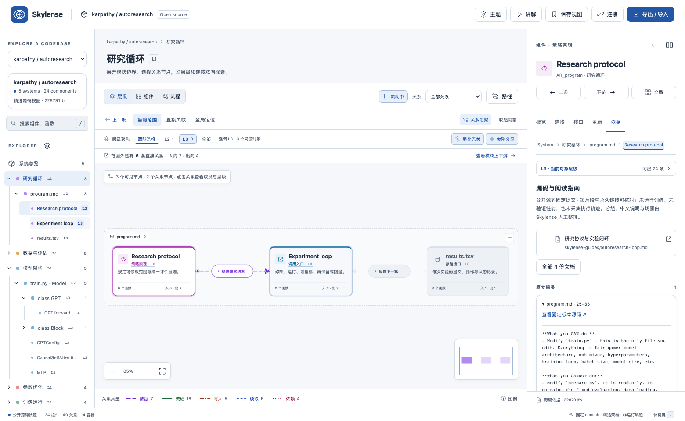
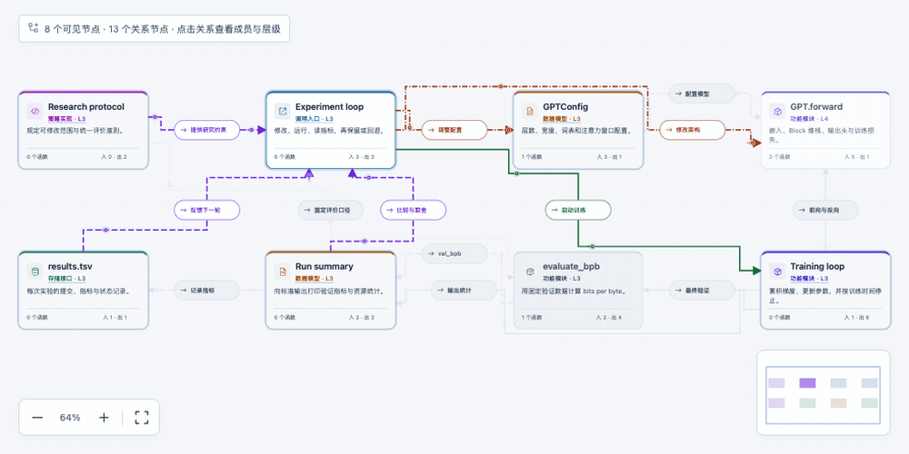

Keep the bigger picture.
Move from systems to modules and components. Parent context and global position travel with you.
Understand how the pieces fit. Explore every layer,
follow the connections, and open the source behind them.
No account. No build step. Your browser is enough.
From overview to understanding
Architecture becomes easier to read when the next useful detail is one click away.

Move from systems to modules and components. Parent context and global position travel with you.
Trace a relationship, compare neighboring components, or build a route through the points you choose.
Open source excerpts, commit-pinned links, inputs and outputs. Every reading path stays connected to its context.
A map that moves with you
Readable right-angle connections and guided flows make complex relationships easier to explain. Pause motion whenever you need.

Actual app recording. Animated connections indicate direction in a curated map, not live execution or measured traffic.
Start with something real
Curated core paths at fixed source revisions. No repository setup or API key needed.
Follow an experiment through GPT training, evaluation, and the next iteration.
karpathy / autoresearch Explore mapAGENT ORCHESTRATIONMove from graph compilation to execution, shared state, and checkpoints.
langchain-ai / langgraph Explore mapINFERENCE SYSTEMSTrace requests through scheduling, KV cache management, and GPU execution.
vllm-project / vllm Explore mapSelected source maps, not exhaustive repository indexes. Import compatible Skylense JSON to explore your own model.
Make room for your way of working
Warm paper, cool porcelain, or a quieter night shift. Switch themes without losing your place.
Midnight — deep blue surfaces and an ice-blue focus.
Beyond the browser
Keep your terminal open. Give your coding agent a structured view of the architecture. Both read the same model as the Web app.
Expand the tree, search symbols, read details, and jump upstream or downstream with your keyboard.
List maps, search, inspect, traverse, read flows, and generate Web view links. Connect a client that supports local stdio MCP.
# Explore interactively
$ skylense tui autoresearch# Follow a directed connection
$ skylense trace autoresearch AR_train \
--depth 2 --json# Print local MCP configuration
$ skylense configGet from curious to exploring
Try it now, or keep an offline copy for your next deep dive.
You can import a compatible Skylense architecture JSON model. This preview includes three curated public examples; automatic indexing of arbitrary source repositories is not included.
This release is a browser app with offline HTML, plus a local Node.js toolkit. A native macOS installer is not available yet.
Skylense is available as a downloadable application preview. Source licensing and commercial rights remain reserved. The attributed example materials retain their upstream licenses. Read the preview notice.
Web imports stay in the current browser session. The local MCP process only reads the bundled models or a JSON file you explicitly select. Connected agents receive query results according to their own data policies. Read the data boundaries.
The preview's interface is primarily Chinese, with source symbols in their original language. This site and the getting-started guides are available in English; a Chinese README is also provided.